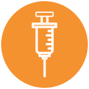

REVLIMID® EN COMBINACIÓN CON BORTEZOMIB Y DEXAMETASONA ESTÁ INDICADO PARA EL TRATAMIENTO DE PACIENTES ADULTOS CON MIELOMA MÚLTIPLE NO TRATADO PREVIAMENTE.
TERAPIA TRIPLE CON REVLIMID®: DOSIS Y ADMINISTRACIÓN EN LOS PACIENTES DE NUEVO DIAGNÓSTICO SIN INTENCIÓN INMEDIATA DE TRASPLANTE
Se recomienda hasta 24 semanas de tratamiento inicial (ocho ciclos de tratamiento de 21 días)1
- Como parte de la terapia triple combinada, la dosis inicial recomendada de REVLIMID® es 25 mg por la vía oral, una vez por día en ciclos de 14 días/21 días
- No deberá iniciarse REVLIMID® en combinación con bortezomib y dexametasona si el recuento absoluto de neutrófilos es <1.0x109 /L; y/o si las cifras de plaquetas fueran<50x109 /L
REVLIMID®: La dosis inicial recomendada es 25mg/día en los días 1-14 (ciclos de 21 días)
Dexametasona: La dosis inicial es 20 mg/día

Bortezomib puede administrarse por las vías subcutánea e intravenosa, pero deberá darse dos veces por semana (1.3 mg/m2 de superficie corporal)